Начну без пощады. Именно эта песня заставила меня начать делать этот плейлист. Но дальше такого стекла не будет (почти)!
Плейлистик
С днём рождения, Ира!
Немного от автора
<<<--- Ради вот этой девушки, которой исполнилось 19 лет, меня держали в подвале и заставляли разобраться в том, что такое hpp и css, в итоге я немного освоил frontend и вместе с электронным другом сделал вот этот сайт. Тут представлена музыка, которую я по тем или иным причинам решил дать тебе послушать. Здесь есть русская музыка и иностранная, попса и рок, знакомые тебе песни и не очень, в общем, enjoy, всего 19 песен, у каждой свое описание, так что получай подарочки, радуйся, с днем рождения!!!
P.S. Фотку спиздил из инсты, СОРЯН
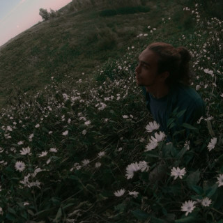
4:00
▾
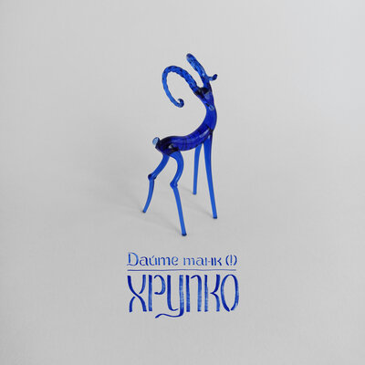
3:26
▾
Сначала не знал какую песню этой группы добавить, но в итоге как-то решил, что вот эта песня из нового альбома неплохо рифмуется с датой, песня классная
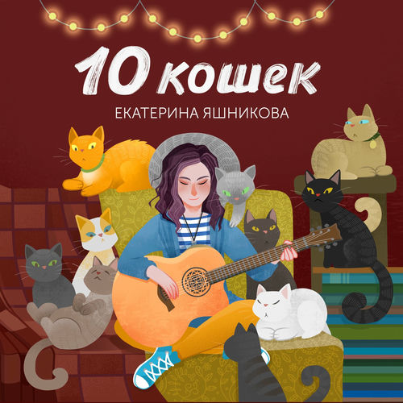
3:10
▾
Самое грустное прошло, тебе пока далеко не за 20, поэтому можно с этой песни смеяться
4:23
▾
"Время остановится сегодня в 19:00 на Владимирской". Специально взял живое выступление, есть в нем что-то притягательное. Нойза и Монеточки тут вообще много относительно других
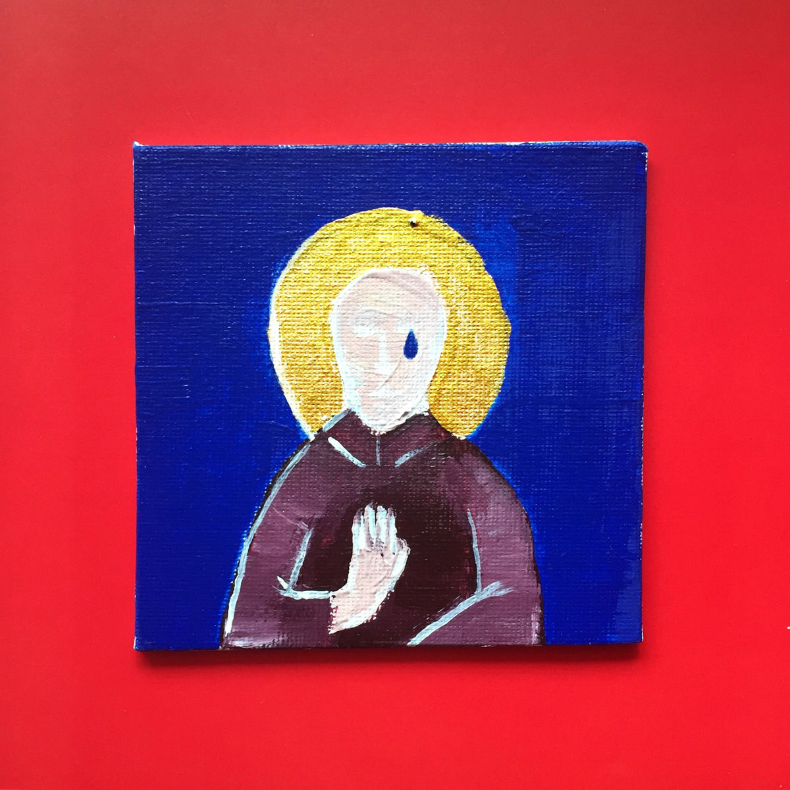
3:28
▾
Попса, да, но я правда думаю, что именно такую музыку надо крутить на дискотеках
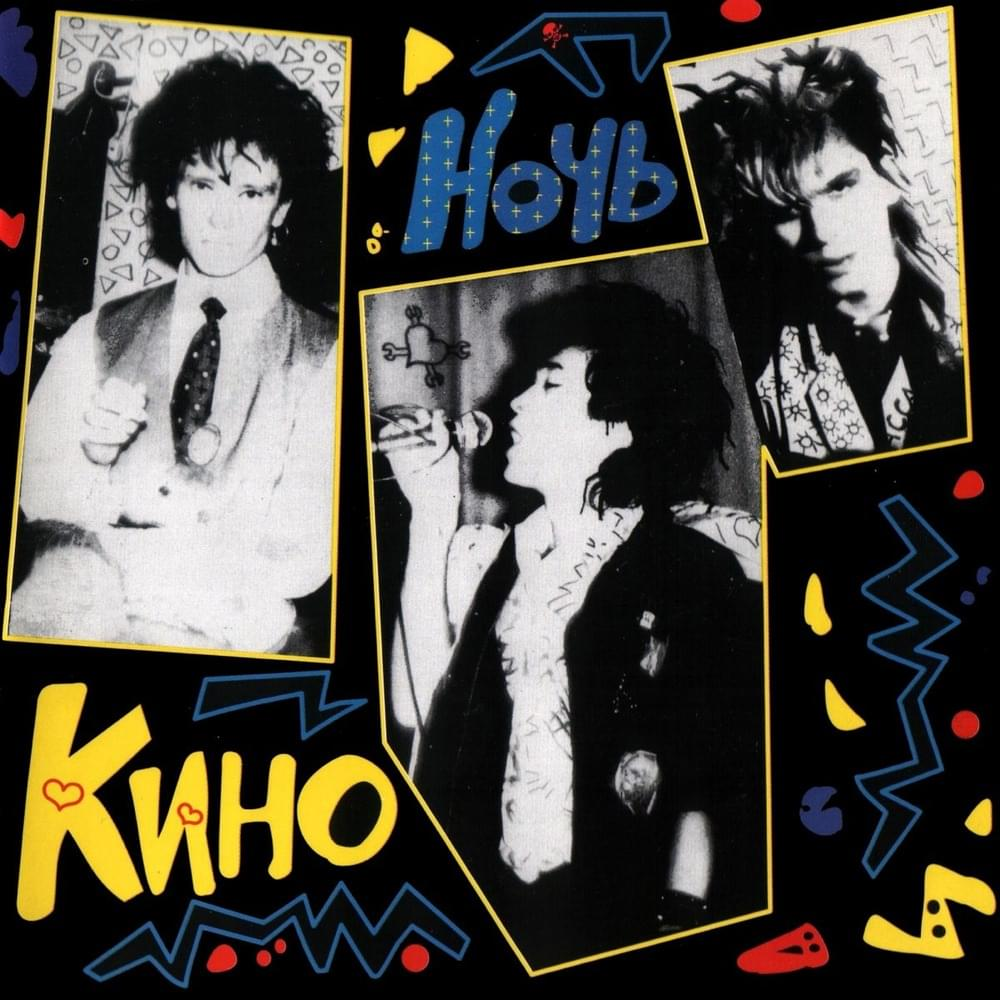
6:22
▾
Ну это наша просто
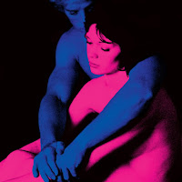
3:47
▾
Увидел в инстаграме, что ты много ставишь TV Girl, и решил сюда поставить буквально первое, что понравилось после короткого ознакомления. Первая зарубежная тут
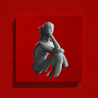
3:37
▾
Моя любимая песня Монеточки на данный момент, заставила меня даже немного пересмотреть отношение к настолке
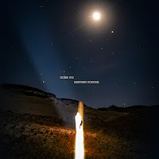
3:51
▾
Я попросил Лёшу назвать две песни, которые он предложил бы тебе послушать, если бы других не существовало, и первая из них это воодушевляющая светлая полоса
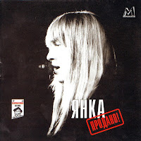
2:22
▾
Это вторая песня Лёши, как по мне самая необычная русскоязычная из всех здесь (но я не узнавал конкретную причину, почему он выбрал именно её)
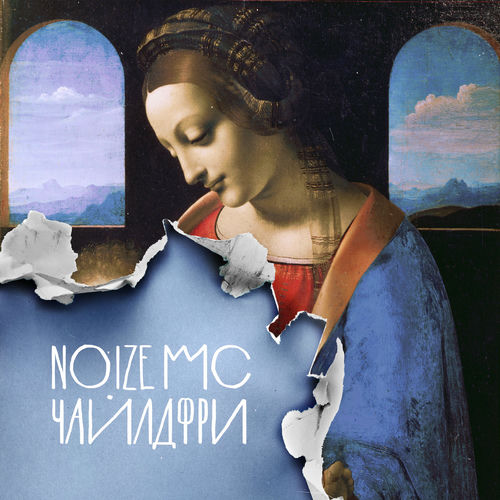
4:06
▾
Переходим в небольшой антракт. Из всех песен Нойза и Монеточки более ироничной, особенно в свете твоего дня рождения, просто не могло быть (но вообще живи, пожалуйста, до старости!)
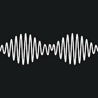
3:35
▾
Антракт продолжается. Одна из немногих медленных песен у Arctic Monkeys, и одна из самых лучших на мой счёт (уж точно лучше басты)
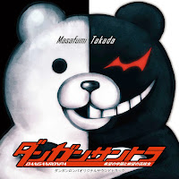
1:36
▾
Стартует блок песен, которые включила бы Милана, если бы других не существовало. Надеюсь, ты от души посмеялась, что первая из них - опенинг Данганронпы
 2:52
▾
2:52
▾
Это вторая песня Миланы. СОЙТИ С УМА ЗА ИСКУССТВО
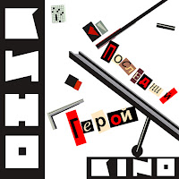
3:04
▾
Снова небольшой антракт, на этот раз на Цоя
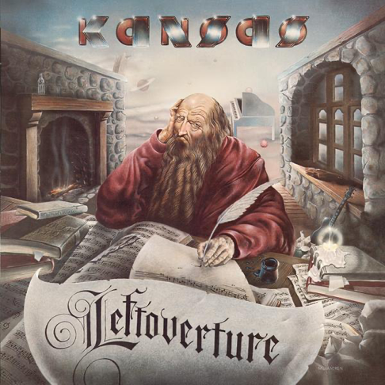
5:24
▾
Здесь стартует блок англоязычных песен, которые я выбрал дать дать тебе послушать. Первая из них - это небольшая капсула времени на случай, если ты посмотришь супернатуралов
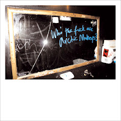
5:36
▾
Вторая. Реально, кто они
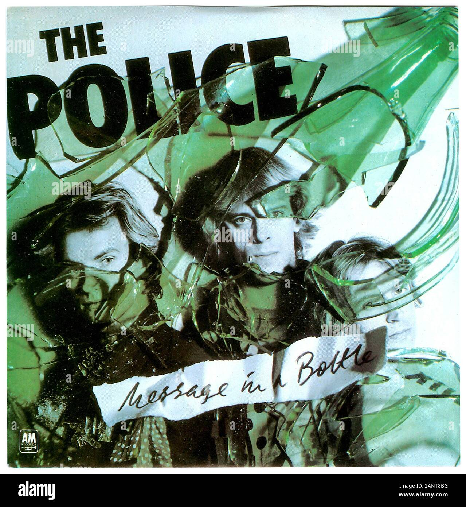
4:49
▾
Третья, очень классная песня, может быть мы и правда не одиноки в своем одиночестве
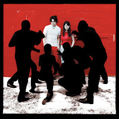
1:50
▾
И финальная, все самое тяжелое и грустное прошло, можно послушать самую простую песню из 4 аккордов на 2 минуты, лучшее место для неё